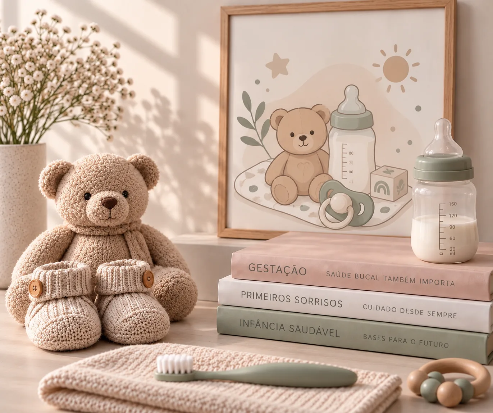
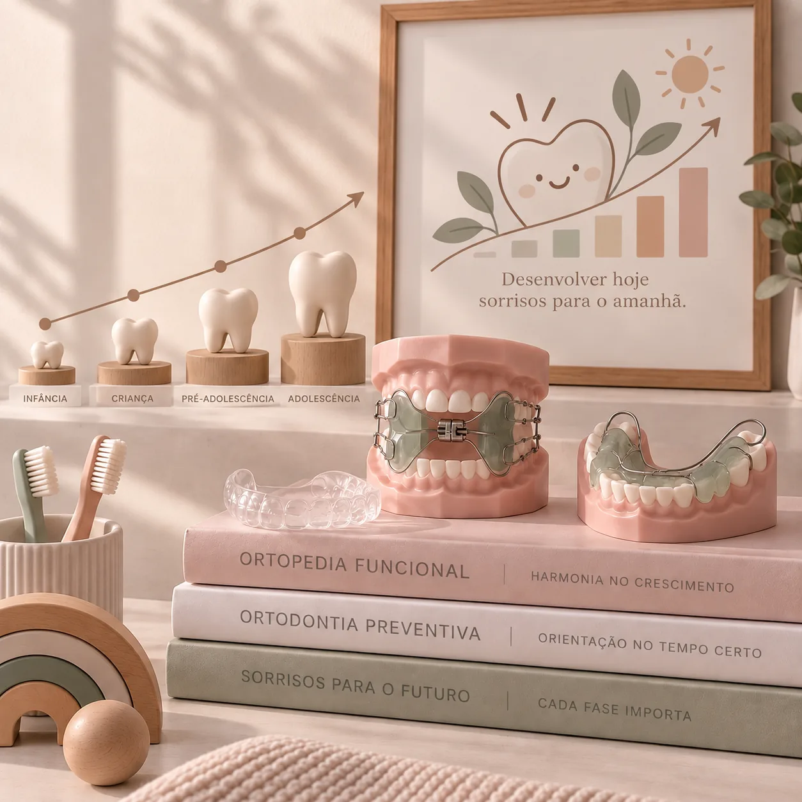
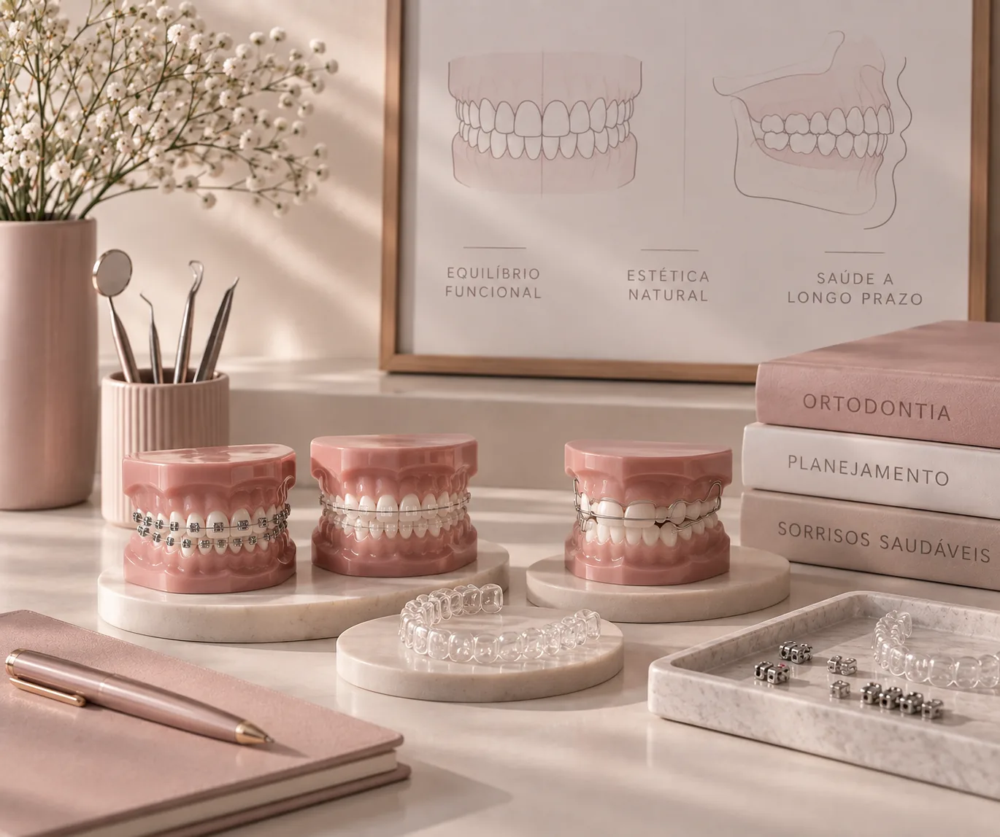

ODONTOPEDIATRIA · ORTOPEDIA FUNCIONAL · ORTODONTIA
O cuidado que começa nos primeiros anos pode acompanhar uma vida inteira.
Da gestação aos primeiros meses, da infância à adolescência e também na vida adulta.
A Dra. Mariângela Zanchet de Oliveira une conhecimento científico, experiência e tecnologia a um atendimento próximo e acolhedor, acompanhando cada paciente de acordo com sua fase e suas necessidades.

Mestre e Especialista

O diferencial
Uma criança não é a mesma aos 2, aos 7 ou aos 14 anos.
O cuidado também não deveria ser.
O crescimento traz mudanças.
Mudam os dentes.
Mudam os hábitos.
Muda a mordida.
Mudam as necessidades.
Por isso, o acompanhamento começa pela compreensão de cada fase, e não simplesmente pela procura de um procedimento.
Desde o pré-natal odontológico e os primeiros meses de vida, passando pela prevenção, pelo acompanhamento do desenvolvimento e, quando necessário, pela Ortopedia Funcional dos Maxilares e Ortodontia.
Cada fase pede um olhar diferente.
OS PILARES DO ATENDIMENTO
Ciência, acolhimento e continuidade.
-
01ciência
Avaliação individual
Ciência
Avaliação individual, conhecimento científico e planejamento antes de qualquer conduta.
-
02acolhimento
Experiência respeitosa
Acolhimento
Uma experiência que respeita o tempo, a personalidade e a individualidade de cada criança.
-
03continuidade
Relacionamento de longa duração
Continuidade
Uma relação que pode começar na infância e acompanhar o paciente por muitos anos. É essa combinação que orienta a forma de cuidar da Dra. Mariângela.
TRATAMENTOS
O que muda com o tempo é a necessidade. O cuidado acompanha.
-
COMEÇAR CEDO
Pré-natal odontológico
Orientações para gestantes e preparação para os primeiros cuidados com a saúde bucal do bebê.
Odontopediatria
Acompanhamento desde os primeiros meses, com avaliação, prevenção e orientação sobre higiene, alimentação e hábitos.

-
ACOMPANHAR O CRESCIMENTO
Ortopedia Funcional dos Maxilares
Avaliação do desenvolvimento e da mordida, com tratamento quando houver indicação.
Ortodontia Preventiva
Acompanhamento do desenvolvimento para identificar alterações e avaliar o momento adequado para intervenção.

-
ALINHAR E TRATAR
Aparelhos Ortodônticos
Opções fixas e estéticas, conforme avaliação e indicação.
Alinhadores
Tratamentos com alinhadores, incluindo Invisalign®, quando indicados.
Ortodontia para Adultos
Tratamentos ortodônticos também para pacientes adultos.

RECURSOS DISPONÍVEIS
Tecnologia ajuda a enxergar melhor. Experiência ajuda a interpretar.
-
RECURSOS
Sedação consciente com óxido nitroso
Atendimento mais tranquilo para crianças e pacientes que precisam de maior conforto.
-
RECURSOS
Laserterapia
Auxílio complementar para suporte clínico e cuidado mais confortável.
-
RECURSOS
Scanner intraoral
Recursos digitais para avaliação e planejamento, quando indicados.
-
RECURSOS
Diagnóstico
Ferramentas que complementam a avaliação e ajudam no planejamento do tratamento.
PRIMEIRA CONSULTA
Antes de decidir o tratamento, a Dra. quer entender o paciente.
A primeira consulta é um momento para conhecer a criança ou o paciente, ouvir os pais, realizar uma avaliação completa, esclarecer dúvidas e entender o que realmente precisa de atenção.
PARA CRIANÇAS
Avaliação completa
Saúde bucal, higiene, alimentação, hábitos e desenvolvimento.
Orientação aos pais
Escova, fio dental, creme dental, quantidade adequada e cuidados para a rotina.
Prevenção
Acompanhamento periódico para cuidar antes que pequenos problemas se tornem grandes preocupações.
PARA AVALIAÇÃO ORTODÔNTICA
Primeiro vem a avaliação da mordida e do desenvolvimento.
Depois, a Dra. explica:
- O que está acontecendo.
- Se existe necessidade de tratamento.
- Quais possibilidades existem.
- Qual aparelho pode ser indicado.
- Quais são os próximos passos.
Quando necessário, a documentação é solicitada ou realizada com o auxílio dos recursos disponíveis na clínica.

SOBRE A DRA.
21 anos de trajetória
Experiência para cuidar.
Proximidade para acompanhar.
Dra. Mariângela é Especialista em Ortodontia e Ortopedia Funcional dos Maxilares.
Ao longo de 21 anos de atuação, construiu uma trajetória unindo conhecimento técnico, atualização científica, tecnologia e um atendimento próximo e acolhedor.
Alguns pacientes chegaram ainda crianças.
Hoje, já adultos, continuam confiando nela.
- 21 anos de atuação
- Especialista Ortodontia e Ortopedia Funcional dos Maxilares
- Habilitada Sedação consciente com óxido nitroso
TECNOLOGIA + EXPERIÊNCIA
Tecnologia ajuda a enxergar melhor.
Experiência ajuda a interpretar.
A clínica conta com recursos tecnológicos que auxiliam na avaliação, documentação e planejamento dos tratamentos.
-
SCANNER INTRAORAL
Recursos digitais
Recursos digitais para avaliação e planejamento, quando indicados.
-
DIAGNÓSTICO
Recursos complementares
Recursos que complementam a avaliação clínica de acordo com a necessidade de cada paciente.
-
SEDAÇÃO CONSCIENTE
Habilitação profissional
A Dra. possui habilitação em sedação consciente com óxido nitroso, recurso que pode ser considerado quando houver indicação.
-
LASERTERAPIA
Recurso terapêutico
Recurso terapêutico utilizado conforme indicação profissional.

INFORMAÇÕES GERAIS
Tudo o que você precisa para chegar até nós.
ONDE ESTAMOS
Raro Odontologia
Avenida Ipiranga, 7424, sala 01, Porto Alegre, Rio Grande do Sul, Brasil
HORÁRIOS DE ATENDIMENTO
De segunda a sexta-feira, das 8h às 18h30.
Atendimento em um sábado por mês, mediante agendamento prévio.
FACILIDADES
Estacionamento com 1h30 de isenção
Clínica com acessibilidade
FORMAS DE PAGAMENTO
Pix • Cartão • Dinheiro
Atendimento particular, não atende convênios.
O cuidado começa nos primeiros anos.
E pode acompanhar cada nova fase.
Se você procura uma profissional para acompanhar a saúde bucal e o desenvolvimento do seu filho desde cedo, o próximo passo pode ser uma primeira conversa.